AR - Lesson 04
Indice
1 Grafi geometrici aleatori e reti wireless
I modelli fin'ora visti (Erdős–Rényi e rich-get-richer) sono tutti modelli di tipo virtuale, ovvero descrivono le connessioni logiche tra i nodi, trascurando del tutto l'implementazione fisica della rete. Spesso però si necessita di modellare reti che debbano essere poi implementate fisicamente. Quando si affronta un problema reale bisogna sempre considerare due fattori:
- la fattibilità
- le risorse necessarie
Infatti, non basta sapere che è fisicamente possibile costruire una rete che è stata precedentemente modellizzata,
ma bisogna sempre tener conto del costo in termine di risorse.
Supponendo che non si disponga di risorse infite, quello che generalmente si desidera è sempre minimizzare i costi.
In ogni caso, quando bisogna implementare una rete fisica, bisogna sempre considerare la struttura geometrica che dovrà avere
e lo spazio in cui dovrà essere costruita.
1.1 Grafo Geometrico
Siano uno spazio metrico \((\mathbb{R}^d, \Vert \cdot \Vert )\) di dimensione \(d \geq 1\), e una costante \(r > 0\) detto raggio. Un grafo geometrico \(G\) è composto dai seguenti insiemi:
- \(V \subseteq \mathbb{R}^d\)
- \(E := \lbrace (a,b) \in V^2 : \Vert a-b \Vert \leq r \rbrace\)
La maggior parte delle volte ci si trova a considerare uno spazio bidimensionale \(\mathbb{R}^2\), con norma euclidea e raggio unitario \(r = 1\). In questo caso esiste un arco tra due nodi \(a,b\) solo se \(\sqrt{(x_1 - x_b)^2 + (y_1 - y_b)^2} \leq 1\). Questo modello è anche noto come unique disk graph.
1.2 Grafo Geometrico Aleatorio
Siano due costanti \(n \in \mathbb{N}\) ed \(0 < r \leq \sqrt{2}\).
Un grafo geometrico aleatorio \(G(n,r)\) è un particolare tipo di grafo aleatorio in cui vengono scelti \(n\) nodi u.a.r.
nell'insieme \(\left[ 0,1 \right] \times \left[ 0,1 \right]\).
Notare che per \(r \rightarrow 0\) il grafo diventa sempre più sparso, mentre per \(r = \sqrt{2}\) il grafo risultate sarà completo1.
L'ultima affermazione è vera perché scegliendo i nodi in quadrato di lato 1, due nodi possono essere distanti al più \(\sqrt{2}\), ovvero
la lunghezza della diagonale di una quadrato.
*inserire immagine*
Questo particolare modello può avere numerosi riscontri pratici.
Per esempio consideriamo una situazione in cui si hanno a disposizione \(n\) sensori ambientali per l'acquisizione di dati utili allo studio di
fenomi atmosferici, e di doverli disporre in una vasta area di 10 \(km^2\).
Prima di spargere i sensori è possibile impostare un raggio \(r\) di trasmissione, utile ai sensori per scambiarsi informazioni.
Ovviamente maggiore è il raggio di trasmissione \(r\), maggiore sarà il cunsumo di batteria dei sensori.
Questi sensori inoltre verranno rilasciati nell'ambiente in maniera casuale lanciandoli da un aereo che sorvolerà l'area.
Si vuole quindi trovare il più piccolo valore di \(r\) in relazione ad \(n\) (che d'ora in poi chiameremo \(r(n)\)) tale che con buona probabilità2
la rete di sonsori \(G(n, r(n))\) risulti connessa, usando così meno batteria possibile.
1.3 Reti Wireless ad-hoc
Quello precedentemente descritto è un caso di reti wireless ad-hoc.
In questo contesto si considera un insieme di \(n\) dispositivi (calcolatori, sensori, ecc…) dislocati in una data area, e ognuno dei quali dotato
un trasmettitore wireless con un fissato raggio di trasmissione.
Come prima, più è ampio il raggio di trasmissione maggiore sarà il consumo di batteria del dispositivo.
Ongi dispositivo \(x\) può trasmettere i messaggi solamente ai dispositivi situati entro il suo raggio di trasmissione \(r_x\).
Notare che non è detto che se un dispositivo \(y\) è dentro il raggio di \(x\), necessariamente \(y\) sia in grado di trasmettere ad \(x\).
Si può quindi modellare questo tipo di rete con un grafo di comunicazione (diretto) dove l'insieme dei nodi corrisponde a quello dei dispositivi, mentre esiste l'arco diretto \((x,y)\) se e solo se \(\Vert x - y \Vert \leq r_x\).
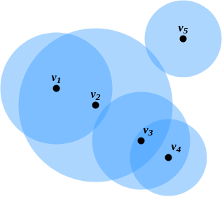
Figura 1: Esempio di rete wireless
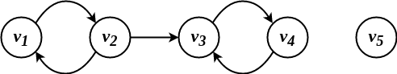
Figura 2: Grafo delle comunicazioni associato
In questo modello è possibile anche mandare messaggi a nodi non direttamente connessi, a patto che siano nelle relative componenti connesse.
Per esempio, se il nodo \(v_1\) volesse mandare un messagio al nodo \(v_4\) potrebbe farlo tramite il cammino \(\langle (v_1,v_2), (v_2,v_3), (v_3,v_4) \rangle\).
Notare però che queste comunicazioni multi-hop non sono simmetriche, in quanto nel grafo delle comunicazioni non esiste alcun cammino diretto che parte da \(v_4\)
e termina in \(v_1\).
Perciò se si vuole che ogni nodo sia in grado di comunicare con tutti gli altri è necessario che i raggi trasmissione siano scelti in modo tale che
il grafo delle comunicazioni sia fortemente connesso3.
Banalmente questo si può ottenere ponendo il raggio di ogni nodo pari alla distanza con il nodo ad esso più lontano, ovvero
\[
r_v = \max_{x \in V \setminus \lbrace v \rbrace}{\lbrace \Vert v - x \Vert \rbrace}
\]
Questo approccio potrebbe risultare però parecchio dispendioso in termini di utilizzo di batteria dei dispositivi.
Sarebbe preferibile scegliere dei raggi di trasmissione tali che minimizzino il più possibile lo spreco di batteria.
Possiamo modellizzare questo problema come nell'esempio della precedente sezione, ovvero assumendo che tutti i nodi abbiano uno stesso
raggio di trasmissione \(r\), e senza perdere di generalità che la regione in cui distribuire i nodi sia un quadrato normalizzato \(Q \equiv \left[ 0,1 \right]^2\).
Ovviamente \(r\) deve essere una funzione di \(n\), in quanto se \(r\) fosse fissato la densità del grafo geometrico aleatorio risultante dipnderebbe da \(n\).
Invece si vuole che al variare di \(n\) il grafo \(G(n,r(n))\) sia sempre fortemente connesso (con buona probabilità).
Osservare che se \(r\) è uguale per tutti i nodi allora non ha senso parlare di grafo diretto, in quanto se un nodo \(x\) riesce a trasmettere direttamente a un nodo
\(y\) allora anche \(y\) può trasmettere in modo diretto a \(x\).
Formalmente la domanda alla quale si vuole dare una risposta è:
dati \(n\) punti distribuiti uniformemente a caso nel quadrato unitario \(Q\), calcolare il valore minimo di \(r(n)\) tale che \(G(n, r(n))\) risulti connesso con buona probabilità
1.4 Connettività di \(G(n, r(n))\)
In questa sezione verrà dimostrato la seguente affermazione:
Sia \(r^{\star}(n)\) il minimo valore di \(r(n)\) tale che garantisce con ragionevole probabilità la connettività di \(G(n,r(n))\). Allora \(r^{\star}(n) \in \Theta\left( \sqrt{\frac{\ln{n}}{n}} \right)\).
Per dimostrare la precedente affermazione è necessario dimostrare due teoremi che mostrano rispettivamente una limitazione superiore ed una inferiore per il minimo raggio di trasmissione \(r^{\star}(n)\).
1.4.1 Teorema 1 - delimitazione superiore
Enunciato: esiste una costante \(\gamma_1 > 0\) tale che se \(r(n) \geq \gamma_1\left( \sqrt{\frac{\ln{n}}{n}} \right)\),
allora \(G(n, r(n))\) è connesso con alta probabilità4.
Proof: definiamo una quantità \(k(n)\) (dipendente da \(n\)), e partizioniamo il quadrato unitario \(Q\) in \(\left(k(n)\right)^2\)
celle ciascuna di lato \(\frac{1}{k(n)}\).
Poniamo \(r(n)\) pari alla lunghezza della diagonale di un rettangolo composto da due celle adiacenti, ovvero
\[
r(n) = \sqrt{\left(\frac{1}{k(n)}\right)^2 + \left(\frac{2}{k(n)}\right)^2} = \frac{\sqrt{5}}{k(n)}
\]
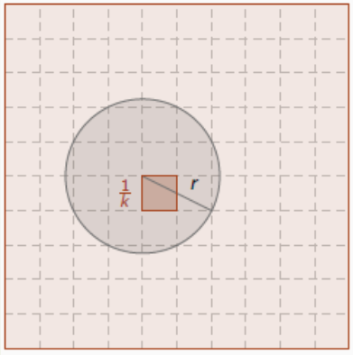
Figura 3: Immagine esplicativa
In questa maniera, ciascun nodo sarà certamente collegato a tutti i nodi nelle celle adiacenti alla sua.
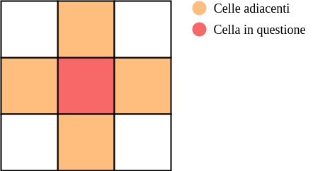
Se con alta probabilità ciascuna cella ha almeno un nodo allora è anche vero che con alta probabilità \(G(n,r(n))\) è connesso.
Dimostriamo quindi che è possibile scegliere un \(k(n)\) tale che w.h.p. nessuna cella di \(Q\) è vuota.
Per calcolare questa probabilità è più semplice partire dal calcolo dell'evento complementare, ovvero calcolare la probabilità dell'evento
che esiste almeno una cella vuota.
Sia \(C\) una cella: iniziamo col calcolare una delimitazione superiore alla probabilità che essa sia vuota \(\mathcal{P}(C = \emptyset)\). L'evento "\(C = \emptyset\)" può essere espresso come l'instersezione degli eventi \(\lbrace i \not\in C \rbrace_{i \in \left[ n \right]}\), ovvero \[ \mathcal{P}(C = \emptyset) = \mathcal{P}\left( \bigcap_{1 \leq i \leq n} i \not\in C \right) \] Dato che ogni nodo è posizionato in maniera totalmente indipendente dagli altri, e dato che la probabilità dell'intersezione di eventi indipendenti è pari al prodotto dei singoli, è vero che \[ \mathcal{P}\left( \bigcap_{1 \leq i \leq n} i \not\in C \right) = \prod_{1 \leq i \leq n} \mathcal{P}\left( i \not\in C \right) \]
Non resta che calcolare la probabilità \(\mathcal{P}\left( i \not\in C \right)\) che un nodo \(i\) non "cada" nella cella \(C\). Osserviamo che la probabilità dell'evento complementare, ovvero la probabilità dell'evento che \(i\) cada in \(C\) può essere ricavata semplicemente con la regola "casi favorevoli fratto casi possibili", che in questo caso si traduce come "area di \(C\) fratto area di \(Q\)", ovvero \[ \mathcal{P}\left( i \in C \right) = \frac{|C|}{|Q|} = \frac{1}{(k(n))^2}\] Di conseguenza \(\mathcal{P}\left( i \not\in C \right) = 1 - \mathcal{P}\left( i \in C \right) = 1 - \frac{1}{(k(n))^2}\). Perciò \[ \mathcal{P}(C = \emptyset) = \mathcal{P}\left( \bigcap_{1 \leq i \leq n} i \not\in C \right) = \prod_{1 \leq i \leq n} \mathcal{P}\left( i \not\in C \right) = \left( 1 - \frac{1}{(k(n))^2} \right)^n \]
Calcolata la probabilità che la cella \(C\) sia vuota, si vuole ora calcolare la probabilità dell'evento che esista almeno una cella vuota, ovvero \[ \mathcal{P}(\exists C : C = \emptyset) = \mathcal{P}(\bigcup_{C \in Q} \lbrace C = \emptyset \rbrace ) \] Rimarcando il concetto di Union Bound che dice che la probabilità dell'unione di eventi è minore o uguale della somma delle loro probabilità possiamo dare la seguente delimitazione superiore \[ \mathcal{P}(\exists C : C = \emptyset) \leq \sum_{C \in Q} \mathcal{P}(C = \emptyset ) = (k(n))^2 \left( 1 - \frac{1}{(k(n))^2} \right)^n \]
Ricordando che \(r(n) = \frac{\sqrt{5}}{k(n)}\), possiamo sostituire \(k(n)\) con \(\frac{\sqrt{5}}{r(n)}\), ottenendo \[ \mathcal{P}(\exists C : C = \emptyset) \leq \frac{5}{(r(n))^2} \left( 1 - \frac{(r(n))^2}{5} \right)^n \]
A questo punto poniamo \(r(n) = \gamma_1\left( \sqrt{\frac{\ln{n}}{n}} \right)\), ottenendo che \[ \mathcal{P}(\exists C : C = \emptyset) \leq \frac{5n}{\gamma^2_1 \ln{n}} \left( 1 - \frac{\gamma^2_1 \ln{n}}{5n} \right)^n \]
Prima di procedere (e concludere) con la dimostrazione della delimitazione superiore è necessario enunciare e dimostrare un lemma tecnico
Lemma: \(\forall x \in \mathbb{R}\) vale la disuguaglianza \(1 - x \leq e^{-x}\). Inoltre se \(x \neq 0\) allora la disuguaglianza è stretta, ovvero \(1 - x e^{-x}\).
Proof: Sia la funzione \(G(x) = 1 - x - e^{-x}\). Calcoliamo la derivata prima di \(G\), ovvero \(G'(x) = e^{-x} - 1\). Studiando il segno di \(G'\) si nota che \[e^{-x} - 1 \geq 0 \implies e^{-x} \geq 1 \implies e^{-x} \geq e^0\] ovvero che \(G'(x) \geq 0\) per \(x \leq 0\).
Inoltre poiché \(G'\) si annulla solamente per \(x=0\), allora possiamo affermare che \(x=0\) è il punto di massimo globale di \(G\).
Infine, dato che \(G(0) = 0\) (e questo è il punto di massimo), possiamo affermare che \(1-x \leq e^{-x}\) per ogni \(x \in \mathbb{R}\). \[G(x) \leq G(0) \implies 1 - x - e^{-x} \leq 0 \implies 1 - x \leq e^{-x}\] \(\square\)
In virtù del precedente Lemma, poniamo \(x = \frac{\gamma^2_1 \ln{n}}{5n}\), e dato che \(\frac{\gamma^2_1 \ln{n}}{5n} \neq 0\), avremo che \[ 1 - \frac{\gamma^2_1 \ln{n}}{5n} < e^{-\frac{\gamma^2_1 \ln{n}}{5n}} \] A questo punto non resta che eseguire qualche passaggio algebrico
\begin{align*} \mathcal{P}(\exists C : C = \emptyset) &\leq \frac{5n}{\gamma^2_1 \ln{n}} \left( 1 - \frac{\gamma^2_1 \ln{n}}{5n} \right)^n\\ &< \frac{5n}{\gamma^2_1 \ln{n}} \left( e^{-\frac{\gamma^2_1 \ln{n}}{5n}} \right)^n\\ &= \frac{5n}{\gamma^2_1 \ln{n}} e^{-\frac{\gamma^2_1 \ln{n}}{5}}\\ &= \frac{5n}{\gamma^2_1 \ln{n}} n^{-\frac{\gamma^2_1}{5}}\\ &< \frac{5n}{\gamma^2_1} n^{-\frac{\gamma^2_1}{5}}\\ &= \frac{5}{\gamma^2_1} n^{1-\frac{\gamma^2_1}{5}} \end{align*}
Osserviamo ora che l'esponente \(1-\frac{\gamma^2_1}{5} < 0\) per \(\gamma_1 > \sqrt{5}\).
In conclusione, scegliendo un qualsiasi \(\gamma_1 > \sqrt{5}\) e ponendo \(b = \frac{5}{\gamma^2_1}\) e \(c = - \left( 1-\frac{\gamma^2_1}{5} \right) = \frac{\gamma^2_1}{5} - 1\), avremo che la probabilità che esista almeno una cella vuota è \[ \mathcal{P}(\exists C : C = \emptyset) < \frac{b}{n^c} \in \left( \frac{1}{n} \right)^{\Omega(1)} \] e che quindi con alta probabilità non ci sono celle vuote \[ \mathcal{P}\left( \forall C \subseteq Q \; \exists x \in V : x \in Q \right) > 1 - \left( \frac{1}{n} \right)^{\Omega(1)} \] \(\square\).
1.4.2 Teorema 2 - delimitazione inferiore
Enunciato: per ogni costante \(c>0\), \[ r(n) \leq \sqrt{ \frac{\ln{(n)} + c}{n \pi} } \implies \lim_{n \rightarrow \infty} \mathcal{P}\Big( G(n,r(n)) \mbox{ è connesso} \Big) > 0 \]
Per brevità, d'ora in poi si farà riferimento a \(G(n,r(n))\) con \(G\), e a \(r(n)\) con \(r\).
Proof: Si vuole dare una delimitazione inferiore alla probabilità che \(G(n,r(n))\) non sia connesso. Per iniziare definiamo le seguenti famiglie di eventi:
- \(\mathcal{E}_{\geq 1}\) = \(G\) contiene almeno un nodo isolato.
- \(\mathcal{E}_{i_1,i_2,...,i_h}\) = i nodi \(i_1,i_2,...,i_h \in \left[ n \right]\) sono tutti isolati in \(G\).
- \(\mathcal{E}_{i!}\) = \(i \in \left[ n \right]\) è l'unico nodo isolato in \(G\).
Facciamo le seguenti osservazioni:
- OSS. 1: se \(G\) contiene almeno un nodo isolato allora certamente \(G\) è disconnesso. In termini logici possiamo scrivere come \(\mathcal{E}_{\geq 1} \implies G \mbox{ disconnesso}\). In termini insiemistici invece l'implicazione si può tradurre come operatore di sottoinsieme, ovvero \(\mathcal{E}_{\geq 1} \subseteq G \mbox{ disconnesso}\). Perciò avremo che \(\mathcal{P}\Big(G \mbox{ disconnesso}\Big) \geq \mathcal{P}(\mathcal{E}_{\geq 1})\).
- OSS. 2: se il nodo 1 è l'unico isolato, oppure se il nodo 2 è l'unico isolato, oppure …, oppure il nodo \(n\) è l'unico isolato allora certamente deve essere vero che \(G\) ha almeno un nodo isolato. Perciò come per la precedente osservazione avremo che \[ \bigcup_{i \in \left[ n \right]} \mathcal{E}_{i!} \subseteq \mathcal{E}_{\geq 1} \] e quindi in termini probabilistici \[ \mathcal{P}\left( \mathcal{E}_{\geq 1} \right) \geq \mathcal{P}\left( \bigcup_{i \in \left[ n \right]} \mathcal{E}_{i!} \right) \]
- OSS. 3: dato che \(\mathcal{E}_{1!}, \mathcal{E}_{2!}, ..., \mathcal{E}_{n!}\) sono tutti eventi disgiunti (ovvero ne può capitare solo uno tra tutti) allora avremo che \[ \mathcal{P}\left( \bigcup_{i \in \left[ n \right]} \mathcal{E}_{i!} \right) = \sum_{i \in \left[ n \right]} \mathcal{P}\left( \mathcal{E}_{i!} \right) \]
Dalle osservazioni 1-2-3 possiamo dare una prima delimitazione inferiore alla probabilità che \(G\) non sia connesso \[ \mathcal{P}\Big(G \mbox{ disconnesso}\Big) \geq \sum_{i \in \left[ n \right]} \mathcal{P}\left( \mathcal{E}_{i!} \right) \]
A questo punto non resta che calcolare \(\mathcal{P}\left( \mathcal{E}_{i!} \right)\). In realtà non è propriamente semplice calcolare questa probabilità in menira diretta, perciò anche in questo caso cercheremo di minorarla5. Notiamo che \(i\) è l'unico nodo isolato in \(G\) se e solo se si verificano i seguenti eventi:
- \(i\) è un nodo isolato in \(G\)
- comunque scegliamo un altro nodo \(j\), avremo che \(i\) e \(j\) non sono enrambi isolati in \(G\), ovvero \[ \mathcal{E}_{i!} \equiv \mathcal{E}_{i} \bigcap_{j \in \left[ n \right] \setminus \lbrace i \rbrace} \overline{\mathcal{E}_{i,j}} \equiv \mathcal{E}_{i} \setminus \left( \bigcup_{j \in \left[ n \right] \setminus \lbrace i \rbrace} \mathcal{E}_{i,j} \right) \] dove l'ultima uguaglianza è data dalla legge di De Morgan6.
Da cui otteniamo la seguente minorazione
\begin{align*} \mathcal{P}\left( \mathcal{E}_{i!} \right) &= \mathcal{P}\left( \mathcal{E}_{i} \setminus \bigcup_{j \in \left[ n \right] \setminus \lbrace i \rbrace} \mathcal{E}_{i,j} \right)\\ &\geq \mathcal{P}\left( \mathcal{E}_{i} \right) - \mathcal{P}\left( \bigcup_{j \in \left[ n \right] \setminus \lbrace i \rbrace} \mathcal{E}_{i,j} \right)\\ &\geq \mathcal{P}\left( \mathcal{E}_{i} \right) - \sum_{j \in \left[ n \right] \setminus \lbrace i \rbrace} \mathcal{P}\left( \mathcal{E}_{i,j} \right) \end{align*}Per calcolare quest'ultima probabilità dobbiamo ancora una volta ricavare delle limitazioni. Più precisamente, se si vuole minorare, dobbiamo:
- trovare una minorazione per \(\mathcal{P}\left( \mathcal{E}_{i} \right)\)
- trovare una maggiorazione per \(\sum_{j \in \left[ n \right] \setminus \lbrace i \rbrace} \mathcal{P}\left( \mathcal{E}_{i,j} \right)\)
- Minorazione per \(\mathcal{P}\left( \mathcal{E}_{i} \right)\)
Sia \(t_i\) il punto di \(Q\) in cui si trova il nodo \(i\), e sia \(C_r(t_i)\) la circonferenza di raggio \(r\) centrata in \(t_i\). L'evento \(\mathcal{E}_i\) si verifica solo se per ogni nodo \(j \neq i\) è vero che \(j \not\in C_r(t_i)\).
Quindi fissati \(j\) e \(t_i\) avremo che \[ \mathcal{P}\left( j \not\in C_r(t_i) \right) = \frac{|Q - C_r(t_i)|}{|Q|} \geq \frac{|Q| - |C_r(t_i)|}{|Q|} = 1 - \pi r^2 \] Il maggiore o uguale è dato perché la circonferenza \(C_r(t_i)\) potrebbe essere posizionata ai bordi, e quindi non rientrare in \(Q\).
Perciò, fissato un \(t_i\) avremo che \[ \mathcal{P}\left(j \not\in C_r(t_i) \; \forall j \neq i \right) \geq \left( 1 - \pi r^2 \right)^{n-1} \] La precedente probabilità è relativa a un dato \(t_i\) fissato. Ciò che serve a noi però è dare una stima per un qualsiasi \(i\). Però, visto che \(t_i\) è scelto uniformemente a caso in un intervallo continuo, allora la funzione di densità della scelta u.a.r. in \(Q\) sarà \(f(t) = \frac{1}{|Q|} = 1\). Perciò la delimitazione inferiore che cerchiamo è
\begin{align*} \mathcal{P}(\mathcal{E}_i) &\geq \int_{t_i \in Q} f(t_i) \left( 1 - \pi r^2 \right)^{n-1} \,dt_i\\ &= \left( 1 - \pi r^2 \right)^{n-1} \int_{t_i \in Q} \,dt_i\\ &= \left( 1 - \pi r^2 \right)^{n-1} \cdot |Q|\\ &= \left( 1 - \pi r^2 \right)^{n-1} \end{align*} - Maggiorazione per \(\sum_{j \in \left[ n \right] \setminus \lbrace i \rbrace} \mathcal{P}\left( \mathcal{E}_{i,j} \right)\)
Banalmente per maggiorare \(\sum_{j \in \left[ n \right] \setminus \lbrace i \rbrace} \mathcal{P}\left( \mathcal{E}_{i,j} \right)\) conviene maggiorare i singoli \(\mathcal{P}\left( \mathcal{E}_{i,j} \right)\). Osserviamo quindi che l'evento \(\mathcal{E}_{i,j}\) occore se e solo se fissato un \(t_i\) occorono le seguenti eventi:
- \(j \not\in C_r(t_i)\)
- \(h \not\in C_r(t_i) \cup C_r(t_j)\) \(\forall h \in \left[ n \right] \setminus \lbrace i,j \rbrace\)
Per calcolare \(\mathcal{P}\left( \mathcal{E}_{i,j} \right)\) consideriamo la seguente immagine
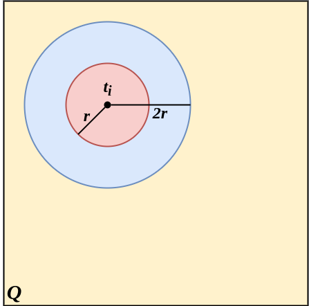
Certamente finché \(j\) si trova al di fuori del cerchio rosso (\(C_r(t_i)\)) allora \(i,j\) non saranno direttamente connessi. A questo punto possono accadere due situazioni:
\(j\) si trova fuori dal cerchio \(C_{2r}(t_i)\), e quindi l'area di \(C_r(t_i) \cup C_r(t_j)\) sarà esattamente la somma delle due aree, ovvero \[|C_r(t_i) \cup C_r(t_j)| = |C_r(t_i)| + |C_r(t_j)|\]
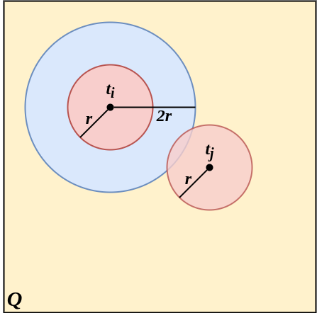
\(j\) si trova nell'anello blu, ovvero in \(C_{2r}(t_i) \setminus C_r(t_i)\), e quindi l'area di \(C_r(t_i) \cup C_r(t_j)\) è minore o uguale della somma delle aree \(|C_r(t_i)|\) e \(|C_r(t_j)|\), ovvero \[|C_r(t_i) \cup C_r(t_j)| = |C_r(t_i)| + |C_r(t_j)| - |C_r(t_i) \cap C_r(t_j)| \leq |C_r(t_i)| + |C_r(t_j)| \]
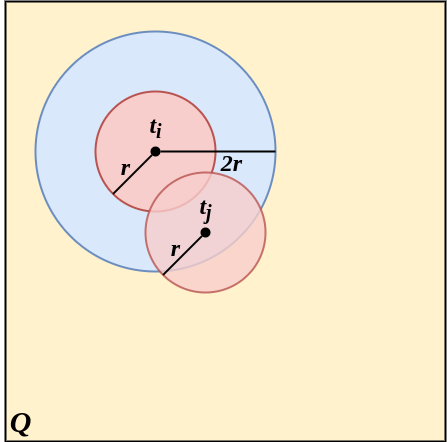
Certamente si sta semplificando il tutto non considerando i casi in cui le circonferenze escano dai bori, però la limitazione non cambia.
A questo punto possiamo riscrivere l'evento \(\mathcal{E}_{i,j}\) come l'unione di due eventi mutuamente esclusivi7:
- \(\mathcal{E}^1_{i,j} \equiv t_j \not\in C_{2r}(t_i) \land \forall h \in \left[ n \right] \setminus \lbrace i,j \rbrace \Big[ h \not\in C_r(t_i) \cup C_r(t_j) \Big]\)
- \(\mathcal{E}^2_{i,j} \equiv t_j \in C_{2r}(t_i) \setminus C_r(t_i) \land \forall h \in \left[ n \right] \setminus \lbrace i,j \rbrace \Big[ h \not\in C_r(t_i) \cup C_r(t_j) \Big]\)
Dato che i due eventi sono disgiunti possiamo dire che \[ \mathcal{P}(\mathcal{E}_{i,j}) = \mathcal{P}(\mathcal{E}^1_{i,j} \cup \mathcal{E}^2_{i,j}) = \mathcal{P}(\mathcal{E}^1_{i,j}) + \mathcal{P}(\mathcal{E}^2_{i,j}) \]
Calcoliamo quindi le due probabilità. Per quanto riguarda \(\mathcal{P}(\mathcal{E}^1_{i,j})\) è abbastanza semplice, in quanto la probabilità che un singolo \(h\) non appartenga all'area \(C_r(t_i) \cup C_r(t_j)\) è pari all'area di \(Q\) meno l'area dei due cerchi \(C_r(t_i)\) e \(C_r(t_j)\). \[ \mathcal{P}(\mathcal{E}^1_{i,j}) = |Q| - |C_r(t_i) \cup C_r(t_j)| = |Q| - |C_r(t_i)| - |C_r(t_j)| = 1 - 2\pi r^2 \] Perciò, dato che ogni nodo viene collocato in \(Q\) in maniera del tutto indipendente dagli altri nodi, possiamo affermare che fissati \(t_i\) e \(t_j\) \[ \mathcal{P}\left(\bigcap_{h \neq i,j} h \not\in C_r(t_i) \cup C_r(t_i) \right) = \prod_{h \neq i,j} \mathcal{P}\left(h \not\in C_r(t_i) \cup C_r(t_i) \right) = \left( 1 - 2\pi r^2 \right)^{n-2} \] Fissando un \(t_i\), avremo che al variare di \(t_j\) al di fuori della circonferenza blu \(C_{2r}(t_i)\), la probabilità che tutti gli altri nodi \(h \neq i, j\) "cadano" al di fuori delle rispettive circonferenze sarà pari a \[\int_{t_j \in Q \setminus C_{2r}(t_i)} f(t_j)\left( 1 - 2\pi r^2 \right)^{n-2} \,dt_j\]
Infine, calcolando tale probabilità al variare anche di \(t_i\), risulterà che
\begin{align*} \mathcal{P}(\mathcal{E}^1_{i,j}) &= \mathcal{P}\left( t_j \not\in C_{2r}(t_i) \land \forall h \in \left[ n \right] \setminus \lbrace i,j \rbrace \Big[ h \not\in C_r(t_i) \cup C_r(t_j) \Big] \right)\\ &= \int_{t_i \in Q} f(t_i) \int_{t_j \in Q \setminus C_{2r}(t_i)} f(t_j)\left( 1 - 2\pi r^2 \right)^{n-2} \,dt_j \,dt_i\\ &= \int_{t_i \in Q} \int_{t_j \in Q \setminus C_{2r}(t_i)} \left( 1 - 2\pi r^2 \right)^{n-2} \,dt_j \,dt_i\\ &= \int_{t_i \in Q} \left( 1 - 4\pi r^2 \right) \left( 1 - 2\pi r^2 \right)^{n-2} \,dt_i\\ &= \left( 1 - 4\pi r^2 \right) \left( 1 - 2\pi r^2 \right)^{n-2} \end{align*}Dove \(f(t_i) = \frac{1}{|Q|} = 1\) ricordiamo essere la funzione di densità riguardo la scelta di un punto uniformemente a caso in \(Q\). Invece la quantità \(\left( 1 - 4\pi r^2 \right)\) è il risultato dell'integrale \(\int_{t_j \in Q \setminus C_{2r}(t_i)} \,dt_{j}\), ovvero l'area di \(Q\) meno l'area del cerchio \(C_{2r}(t_i)\).
Più articolato è invece il calcolo di \(\mathcal{P}(\mathcal{E}^2_{i,j})\). Osserviamo che, fissato un \(t_i\), la probobailità che un nodo \(h \neq i,j\) finisca fuori dall'area \(|C_r(t_i) \cup C_r(t_j)|\) dipende da come è posizionato \(t_j\) nell'anello blu \(C_{2r}(t_i) \setminus C_r(t_i)\).
Più precisamente, la probabilità che \(h\) non finisca in \(C_r(t_i) \cup C_r(t_j)\) è pari ad \(1 - |C_r(t_i) \cup C_r(t_j)|\). A questo l'area di \(|C_r(t_i) \cup C_r(t_j)|\) sarà
\begin{align*} |C_r(t_i) \cup C_r(t_j)| &= |C_r(t_i)| + |C_r(t_j)| - |C_r(t_i) \cap C_r(t_j)|\\ &= 2\pi r^2 - |C_r(t_i) \cap C_r(t_j)| \end{align*}Notare che ai fini della dimostrazione vogliamo che quest'ultima quantità sia minima, e questo accade quando l'area dell'intersezione \(|C_r(t_i) \cap C_r(t_j)|\) è massima. Geometricamente si può intuire che questo accade quando \(t_j\) risiede esattamente sul perimetro del cerchio \(C_r(t_i)\).
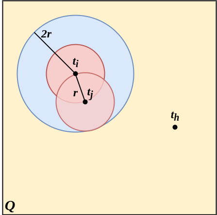
Per calcolare tale area consideriamo la seguente immagine
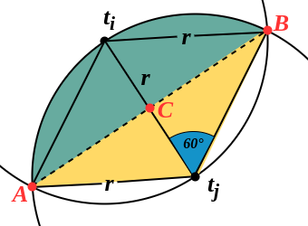
Figura 10: Intersezione tra \(C_r(t_i)\) e \(C_r(t_j)\).
Per calcolare l'intersezione tra \(C_r(t_i)\) e \(C_r(t_j)\) basta calcolare l'area verde in figura e moltiplicarla per 2. Notare che i triangoli \(\overset{\triangle}{t_i B t_j}\) e \(\overset{\triangle}{t_i A t_j}\) sono triangoli equilateri di lato \(r\), e di conseguenza con angoli di 60°. Perciò l'agolo di \(\widehat{A t_j B}\) sarà \(\theta = 120° = \frac{2\pi}{3}\). La lunghezza dell'arco \(AB\) è invece pari a \(L = \theta r = \frac{2\pi}{3} r\).
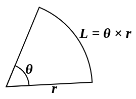
Figura 11: Formula lunghezza di un arco di circonferenza
Invece, l'area dello spicchio formato dall'area verde e dall'area gialla può essere calcolato con la formula \(\frac{L \times r}{2}\).
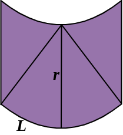
Figura 12: In viola l'area \(L \times r\).
In fine bisogna sottrarre l'area del triangolo giallo. Per fare ciò bisogna calolcare la lungezza del segmento \(\overline{CB}\), e questo si può fare semplicemente col teorema di Pitagora
\begin{align*} \overline{CB} &= \sqrt{ \overline{t_i B}^2 - \overline{t_i C}^2 }\\ &= \sqrt{ r^2 - \left(\frac{r}{2}\right)^2 }\\ &= \sqrt{ r^2 \left( 1 - \frac{1}{4} \right) }\\ &= \sqrt{ r^2 \left( 1 - \frac{1}{4} \right) }\\ &= \sqrt{ \frac{3}{4}r^2}\\ &= \frac{\sqrt{3}}{2}r \end{align*}Perciò l'area del triangolo giallo sarà \[ 2\overline{CB} \times \frac{r}{2} \times \frac{1}{2} = \frac{\sqrt{3}}{4}r^2 \]
In conclusione l'area dell'intersezione \(C_r(t_i) \cap C_r(t_j)\) sarà pari a
\begin{align*} |C_r(t_i) \cap C_r(t_j)| &= 2 \times \left( \frac{L \times r}{2} - \frac{\sqrt{3}}{4}r^2 \right)\\ &= 2 \times \left( \frac{\frac{2\pi}{3} r \times r}{2} - \frac{\sqrt{3}}{4}r^2 \right)\\ &= \frac{2\pi}{3}r^2 - \frac{\sqrt{3}}{2}r^2\\ &= 2r^2 \left( \frac{\pi}{3} - \frac{\sqrt{3}}{4} \right) \end{align*}Ritornando quindi alla formula da massimizzare
\begin{align*} |C_r(t_i) \cup C_r(t_j)| &= 2\pi r^2 - |C_r(t_i) \cap C_r(t_j)|\\ &\geq 2\pi r^2 - 2r^2 \left( \frac{\pi}{3} - \frac{\sqrt{3}}{4} \right)\\ &= 2\pi r^2 - \frac{2}{3}\pi r^2 + \frac{\sqrt{3}}{2}r^2\\ &= \frac{4}{3}\pi r^2 + \frac{\pi}{\pi} \cdot \frac{\sqrt{3}}{2}r^2\\ &= \pi r^2 \left(\frac{4}{3} + \frac{\sqrt{3}}{2 \pi}\right)\\ &> \frac{8}{5}\pi r^2 \end{align*}In conclusione, fissati \(t_i\) e \(t_j\) come descritto dall'evento \(\mathcal{E}^2_{i,j}\), la probabilità che un nodo \(h\) finisca al di fuori di \(C_r(t_i) \cup C_r(t_j)\) sarà \(< 1 - \frac{8}{5}\pi r^2\). Se estendiamo questa probabilità a tutti i nodi \(h \neq i,j\) essa sarà \(< \left(1 - \frac{8}{5}\pi r^2\right)^{n-2}\).
[DA FINIRE…]
Note a piè di pagina:
ovvero una clique di \(n\) nodi.
perché \(G(n, r(n))\) è un evento aleatorio, e quindi si possono solo fare previsioni probabilistiche.
ovvero che per ogni coppia di nodi \(x,y\) esista un cammino diretto da \(x\) ad \(y\) e un cammino diretto da \(y\) ad \(x\).
con probabilità almeno \(1 - \left(\frac{1}{n}\right)^{\Omega(1)}\).
trovare un'ulteriore delimitazione inferiore.
\(\overline{A} \cap \overline{B} \equiv \overline{A \cup B}\)
ovvero disgiunti.